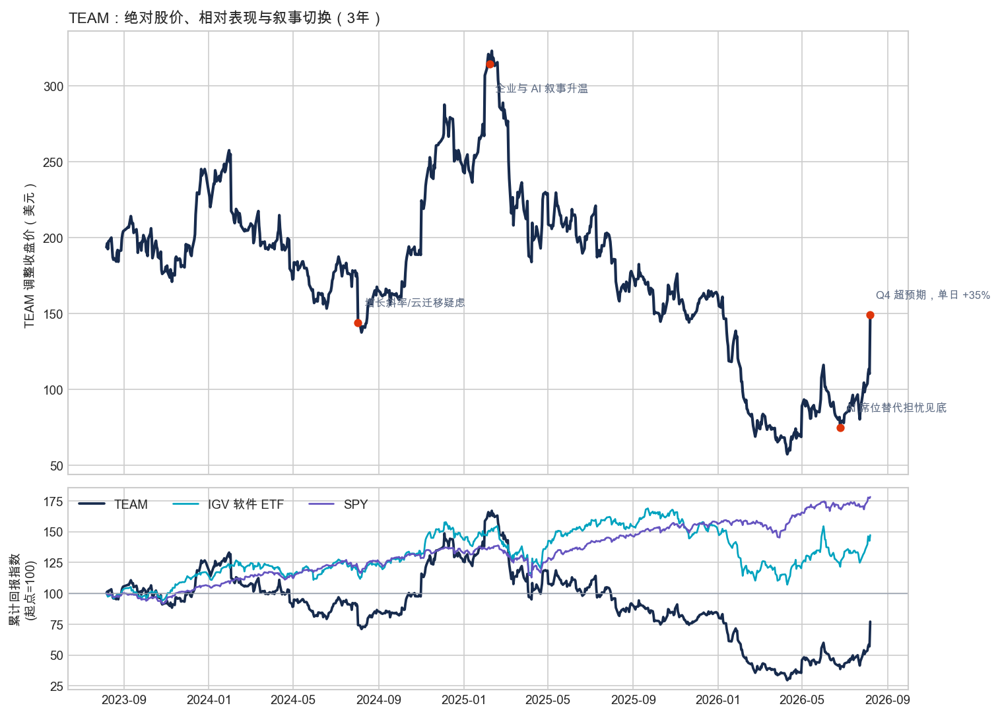
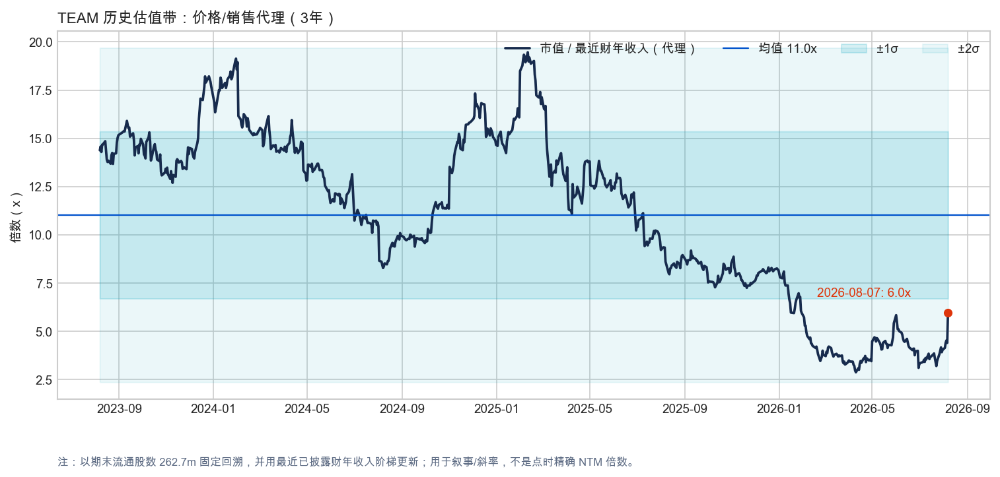
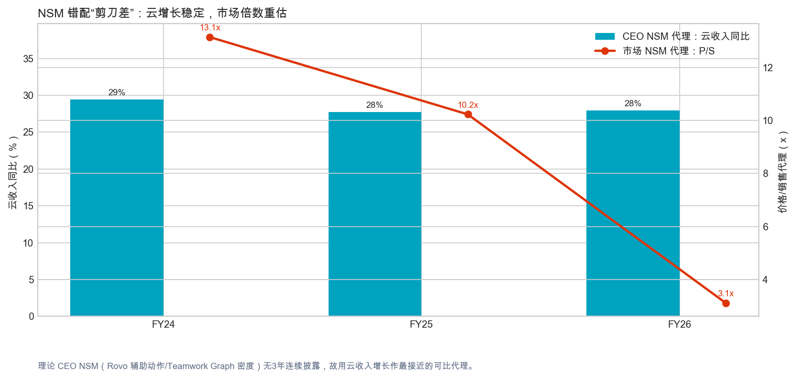

Ticker: TEAM
Date: 2026-08-08
Classification: 进入下一阶段研究（估值/验证门控）
值得继续研究，但应“研究先行、入场等待”。
TEAM 的结构性错价假设已经达到进一步研究门槛：市场仍主要用总收入减速、Data Center 退出和人类席位收缩评估公司，而可持续经济体正迁向云平台、Teamwork Graph、企业级套件与人类/agent 共同产生的工作流。FY26 云收入同比增长 28%，Subscription ARR 增长 23%，RPO 增长 44%；Rovo 采用者的 ARR 增速超过非采用者两倍，且 Rovo 辅助动作环比增长逾 50%。这些数据尚不能证明因果或长期单位经济，但足以构成“市场可能用了旧尺子”的可信案件。S1
当前价格已在 FY26 Q4 后单日上涨 35.3% 至 149.07 美元；技术面 RSI 78.6、股价远高于 EMA50，短线已过热。更重要的是，FY26 自由现金流 13.19 亿美元低于 SBC 16.07 亿美元，GAAP 全年经营利润率约为零，而非 GAAP 经营利润率为 30%。因此，业务错价的可能性不等于当前价位已有安全边际。下一阶段必须把 seat、price、usage、cloud migration 和 SBC/FCF 分别建模。S1S3
| 来源类别 | 最新日期/期间 | 新鲜度 | 距报告日 |
|---|---|---|---|
| 新闻 | 2026-08-07 | 当前 | 1 天 |
| 卖方研报 | Jefferies，2025-09-07 | 陈旧且覆盖不足 | 约 11 个月 |
| 财报电话会 | FY26 Q3，2026-04-30 | 部分当前；Q4 电话会未入库 | 约 3 个月 |
| SEC / 公司原件 | FY26 Q4 8-K，2026-08-06 | 当前 | 2 天 |
| 买方/从业者材料 | 2026-06-12 | 当前但多为行业框架 | 约 8 周 |
| 播客深度讨论 | Podwise 检索，2026-08-08 | 当前检索；观点日期混合 | 当日 |
| 项目 | 最新状态 |
|---|---|
| 市场数据与定位 | 2026-08-07 收盘 149.07 美元，单日 +35.3%；52 周区间 56.01–184.00 美元；市值约 391.6 亿美元，企业价值约 391.5 亿美元。FMP 目标价一致预期 166.83 美元，仅比现价高约 12%。S3 |
| 最新经营 | FY26 Q4 收入 17.66 亿美元（+28%），云收入 12.13 亿美元（+31%）；FY26 全年收入 65.72 亿美元（+26%），云收入 44.11 亿美元（+28%），FCF 13.19 亿美元（-7%）。S1 |
| 指引/预期 | 管理层 FY27 指引：总收入 +13%、云收入 +25.5%、Data Center -17%、GAAP 经营利润率 4.5%、非 GAAP 25%。这是管理层目标，不是事实；FMP FY27 收入一致预期约 73.37 亿美元，对 FY26 实际值隐含 +11.6%。S1S3 |
| 价格行为与技术面 | 30 个交易日从 78.74 美元升至 149.07 美元，涨幅约 89%；RSI 78.6、MACD 柱值 +4.26、价格高于 EMA50 约 58%，并突破布林带上轨。信号是财报跳空后的过热，不是低风险动量确认。S4 |
| 持仓/内部人 | 自由流通股约 98.1%。FMP 的 2026Q2 内部人统计显示 41 笔处置、0 笔公开市场购买；该统计混含税务代扣/计划交易，不能直接等同主动看空。Jefferies 报告则记录一位董事于 2025-08-28 以约 173 美元买入 1,455 股。S3S7 |
| 关键指标 | 数值 | 投资含义 |
|---|---|---|
| RPO 增长 | +44% | 企业大单和更长期承诺加强合同可见性，但需拆分合同期限拉长与真实需求。 |
| Rovo 辅助动作 | 环比 >50% | 最接近 CEO NSM 的当前披露；仍需验证其付费 credits、毛利和留存贡献。 |
| SBC / 收入 | 24.4% | FCF 质量的核心折价项；SBC 16.07 亿美元高于 FCF 13.19 亿美元。 |
| FY27 云收入指引 | +25.5% | 若兑现，可证明总收入 13% 被 Data Center 退出掩盖；若明显下修，错误锚点案件失效。 |
当前市场的“尺子”是 EV/销售 + FCF 质量折价，而非 P/E。按 FY26 已披露收入和 2026-08-07 企业价值计算，TEAM 约为 6.0 倍 EV/FY26 销售、29.7 倍 EV/FY26 FCF，FCF 收益率约 3.4%。FMP 在最新 8-K 后给出的 TEAM TTM EV/销售为 3.4 倍，但其分母与 SEC FY26 收入不相容，疑似发生期间重复，因此本报告弃用该字段并以 SEC 实际值重算；这是 FMP 方法覆盖不足的明确例子。S1S3
市场似乎在价格中加入三层折价：FY27 总收入仅 13% 增长、Data Center 收入下降 17%，以及 AI 可能减少人类席位。反向证据是云增长仍在约 25%–30%、RPO/大客户加速、Rovo 和 MCP 使用带来更多 Jira/Confluence 工作流。错价的关键不是恢复过去 13–19 倍销售，而是证明 TEAM 应从“衰退的席位 SaaS”迁到“低个位数至中个位数以上的混合 seat+usage 平台”框架。
| 公司 | 市值 | EV/销售 | EV/FCF | 下一财年收入增速* | FCF Margin |
|---|---|---|---|---|---|
| TEAM | $39.2B | 6.0x† | 29.7x† | 11.6% | 20.1%† |
| NOW | $129.1B | 9.2x | 29.5x | 10.0% | 31.1% |
| DDOG | $83.3B | 21.2x | 72.8x | 10.3% | 29.1% |
| SNOW | $114.5B | 22.9x | 98.5x | 21.2% | 23.2% |
* FMP 一致预期，属于市场预期而非事实；不同财年不完全对齐。† TEAM 以 FY26 SEC 实际值重算。NOW 是最相关的企业工作流/ITSM 估值参照；DDOG/SNOW 的用量型 AI 暴露更强，倍数仅用于显示市场对消费/AI 斜率的溢价，不宜机械套用。来源：FMP，检索日 2026-08-08。

TEAM 过去三年显著跑输 SPY 和 IGV；2026-08-07 的单日重估修复了极端悲观，但尚未扭转三年相对损失。价格：Yahoo Finance，经 2026-08-08 下载。

价格/销售代理仍低于三年均值约 11 倍，但固定股数和最近财年收入阶梯会夸大早期精度；该图用于识别估值制度切换，而非精确 NTM 定价。

FY24–FY26 云收入增速稳定在约 28%–29%，而财年末 P/S 代理从 13.1 倍降至 3.1 倍（FY26 财年末处于股价低谷）；8 月 7 日反弹后约为 6.0 倍。理论 CEO NSM 缺少三年连续披露，故使用云收入增速作为可比代理。云收入：SEC；价格：Yahoo Finance。
| 视角 | 评估 |
|---|---|
| CEO NSM | 每月被人类与 agent 完成的高价值工作流 / Teamwork Graph 密度。当前最接近的披露是 Rovo 辅助动作、MCP 调用、Jira work items 和 Confluence pages；FY26 Q4 中 Rovo 辅助动作环比 >50%，MCP 调用环比 >400%。S1 |
| 长期投资者 NSM | 云 ARR 的高质量扩展：Rovo/Collection 采用带来的 ARR/NRR、RPO、续费与 FCF（扣除稀释后的）增长。核心不是 MAU 本身，而是 workflow → org dependence → paid expansion。 |
| 市场共识 NSM | 总收入增长与人类 seat expansion。市场尤其惩罚 FY27 总收入 13%、Data Center -17% 和 AI 减员对席位分母的冲击；Q4 后开始给 RPO/AI 采用更多权重。 |
| 错配类型 | 健康滞后，尚未完全证实。价值创造指标开始向 ARR/RPO 传导，但用量收入、token 成本、NRR/GRR 和真实 seat bridge 未充分披露；若这些链条断裂，会转成“危险背离”。 |
Rovo / agent 节省时间与提高答案质量 → 更多 Jira 工作项、Confluence 页面与跨工具上下文 → Teamwork Collection 和企业云标准化 → Teamwork Graph 成为权限、治理、审计与协调控制面 → seat + AI credits + edition/collection 升级 → ARR / RPO / retention → GAAP margin 与扣除稀释后的现金流
| 分析师情景（FY28） | 收入 | FCF Margin | EV/FCF | 隐含股价 | 相对现价 |
|---|---|---|---|---|---|
| Bear：席位/迁云弱，AI 仅增成本 | $7.5B | 17% | 20x | 约 $97 | -35% |
| Base：FY28 一致预期 + 温和杠杆 | $8.5B | 22% | 28x | 约 $200 | +34% |
| Bull：Rovo/Collection 重加速 | $9.1B | 25% | 32x | 约 $277 | +86% |
分析师推演，不是预测或目标价。假设净债务接近零、稀释后股数 262.7m；未单独计入未来回购/稀释。Base 收入取 FMP FY28 一致预期约 85.0 亿美元；其余为显式敏感性。结果显示赔率足够支持进一步研究，但当前证据不足以直接选择 Base/Bull。
Classification: 进入下一阶段研究（估值/验证门控）。
| 晋级条件 | 判断 |
|---|---|
| 错误锚点 | 满足。总收入与 seat 是旧锚；云收入、RPO、Rovo/Graph 驱动的工作流和企业套件更接近未来价值捕获。但需防止把 DC 迁移收入重复算作新增长。 |
| 正确时的实质上行 | 满足，但对假设敏感。Base 情景约 +34%，Bull 可达 +86%；当前卖方目标价一致预期仅约 +12%，说明市场尚未完全承认重估，但单日上涨后安全边际变窄。 |
| 清晰验证路径 | 满足。未来 2–4 季度可用云收入、RPO/cRPO、Rovo 付费用量、采用者 ARR/retention、DC 下滑、GAAP 毛利/经营利润率、SBC 和稀释直接证伪。 |
Actionability: wait for proofNext workflow: driver modelEntry: technicals overheated